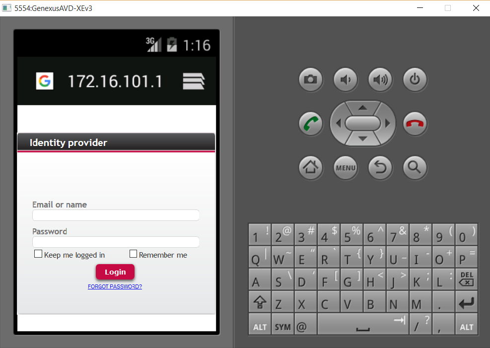

Here is how to configure GAM Remote Authentication Type for Smart Device apps. After completing the configuration steps for the client and the server explained in the document GAM Remote Authentication Type, you need to consider the following: How to loginThe login is called by coding the following in the GAMSDLogin object (the login object in the client):
Event 'LoginRemote'
Composite
SDactions.LoginExternal("gamremote","","")
Return
EndComposite
Endevent
In GeneXus 15 the code should be Event 'LoginRemote' Composite &LoginExternalAdditionalParameters = new() &LoginExternalAdditionalParameters.AuthenticationTypeName = !"ip_new" //Use only when there is more than one GAMRemote authentication type GeneXus.SD.Actions.LoginExternal(GAMAuthenticationTypes.GAMRemote, &User, &Password, &LoginExternalAdditionalParameters) Return EndComposite Endevent When the user taps on the "LoginRemote" action, he is redirected to the gamremotelogin object (that executes on the server side).  LogoutLogging out from the client does not log out from the server. Availability of GAM Remote Authentication Type for Smart DevicesSince GeneXus X Evolution 3 Upgrade 6.
|
| Backlinks |
| GAM Remote Authentication Type |
| Multi-tenant GAM applications using Single Sign On |